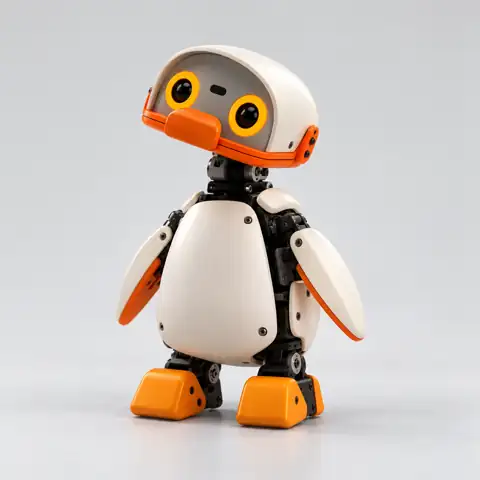
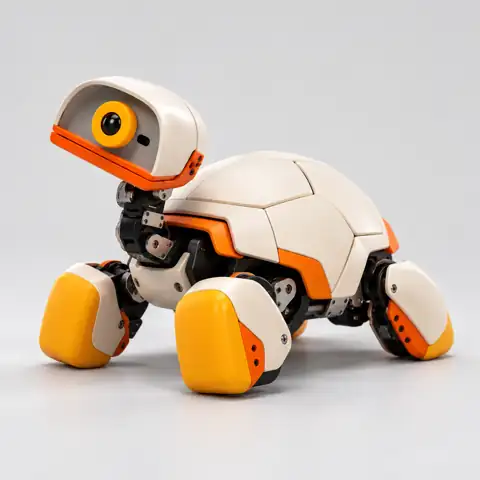

01
Conversational voice
A pet can take part in natural back-and-forth conversation, answer simple questions, and react through its posture instead of relying on speech alone.
Two distinctly different characters. One shared vision for personal robotics.
The collection begins with two animal-inspired robots, a penguin and a turtle. Their design combines a unified white-and-orange mechanical language with distinct forms of movement, attention, and expression. The penguin uses an upright silhouette, rounded optical face, short articulated flippers, and broad feet. The turtle uses a stable four-legged body, compact optical head, and segmented protective shell. Together, the designs explore how small robots might communicate presence and personality without needing humanlike faces or large humanoid bodies.
This document describes the companion experience, interaction model, envisioned physical behavior, personalization, home life, and the engineering considerations necessary for a full robotics product. The extensive feature catalog below serves as an illustrative creative product specification. It is not a set of independently verified shipping features or an official NVIDIA announcement.
Most everyday technology exists behind a screen. NVIDIA Pets takes a different approach. Instead of asking people to open another application, the companion becomes a small physical presence: a device that can face you when you enter the room, give a subtle sign that it is listening, move a short distance toward a familiar object, or settle into a quiet resting pose.
The design favors simple, readable actions over exaggerated tricks. A tiny pause can communicate uncertainty. A head tilt can convey curiosity. A slow turn toward a sound can convey attention. A confident step forward can make an otherwise mechanical object feel responsive and approachable. These behaviors form the basis of a proposed personality system that links perception, context, and motion.
The product family shares its most important visual cues: smooth off-white shell panels, carefully placed orange components, dark exposed mechanical joints, high-contrast optical eye modules, visible hardware seams, and a small, approachable scale. Yet the two bodies remain immediately recognizable.
Expressive, inquisitive and always ready to explore.

The penguin is the more outgoing of the two personalities. A large rounded head, paired optical eyes, orange beak, and small mechanical flippers give it a recognizable expressive language. Its compact bipedal body invites a distinctive short-stepping gait, with gentle side-to-side weight shifts. Rather than performing dramatic gestures, the penguin communicates through little moments: noticing movement, looking toward an approaching person, lifting a flipper, or turning its head at an unexpected sound.
In the imagined experience, the penguin enjoys active interaction. It may invite a game, react to a greeting with a brief movement sequence, follow an approved path across an uncluttered room, or return to its familiar resting spot when the household becomes quiet. The result is a companion whose personality comes from the rhythm of its movement as much as its spoken responses.
Quietly curious, patient and reassuring.

The turtle approaches interaction at a different pace. Its segmented upper shell creates a recognizable protective shape, while its articulated neck allows it to direct attention without moving the entire body. Four broad contact feet and a low center of gravity suit a measured, deliberate gait. The robot can seem attentive even while standing still, simply by turning its optical head or shifting its stance.
In the imagined experience, the turtle becomes a calm companion for a desk, studio, or quiet living space. It may watch an approved activity, respond to a gentle tap, approach a designated play area, or settle into a low-energy resting routine. It does not need to imitate a biological animal to communicate an identity of its own. Its mechanical form is central to its charm.
The companion experience centers on responsive, understandable behavior rather than a passive voice assistant.
A pet can take part in natural back-and-forth conversation, answer simple questions, and react through its posture instead of relying on speech alone.
The penguin favors curiosity and playful gestures. The turtle favors slower, patient interactions. Both personalities define how they react to the same event.
User-approved preferences, recurring interests, favorite games, and named routines give interactions continuity over time.
Household members can maintain different names, preferences, and interaction patterns with a companion.
Small head tilts, eye movement, pauses, and posture changes communicate attention, excitement, uncertainty, or rest.
Conversation can refer to a previous interaction, such as returning to a story or repeating a favorite activity.
The robot can acknowledge a nearby person with a turn of the head, an optical expression, or a short greeting.
Two robots could communicate through chirps, synchronized movement, and turn-taking to create small shared behaviors.
The robots are envisioned as approachable devices that move deliberately through everyday rooms, with predictable, safety-conscious limits.
The penguin's restrained waddle and the turtle's measured four-foot gait give each companion a recognizable movement signature.
Visual and proximity sensing can help a robot identify open space, furniture boundaries, and objects in its immediate path.
Rather than handling every object, a pet could notice a familiar toy, examine it from a safe distance, and react with a head turn.
A user can invite a robot to move alongside them at a gentle, controlled pace, subject to its surroundings and movement constraints.
A companion can orient its optical face toward voices, movement, or interaction cues without constant whole-body repositioning.
The robot can recognize a preferred resting area, charging location, or designated play zone, giving it familiar places to return to.
Long idle periods can transition into a quieter state with fewer sounds, slower movements, and reduced activity.
Simple games could include following an object, responding to taps, looking between household members, or repeating a movement pattern.
A useful companion should offer playful behavior without demanding constant attention or disrupting a household.
Choose between quiet company, playful exploration, guided interaction, or scheduled rest depending on the moment.
The robot could provide reminders through a small sound, posture change, or short spoken cue instead of intrusive alerts.
A companion can attach its own greeting or gesture to familiar household events such as waking up, returning home, or winding down.
Sensing through selected shell surfaces could let people communicate through simple taps, strokes, and short holds.
Separate controls for movement speed, vocal output, and active hours help adapt the experience to different households.
Scheduled low-noise periods suppress wandering and nonessential sounds, making the robot easier to live with.
Interchangeable aesthetic accents, companion sounds, and optional visual themes could create different looks without changing core hardware.
Two companions can coordinate a small arrival greeting, take turns following an object, or respond to a group interaction.
Physical companionship requires careful control over sensing, data, motion, and everyday maintenance.
The core experience is intended to remain understandable and controllable on the robot, with clear indication of optional connected features.
People should be able to review, reset, or disable stored personalization rather than treating memory as an invisible feature.
Visible device states and accessible controls should make sensing and recording behavior understandable.
Speed and proximity limits, obstacle avoidance, and clear stop behavior matter more than chasing complex tricks.
Joint covers, thermal limits, pinch-point evaluation, and stability testing belong in any physical implementation.
The product experience can include a dedicated resting or charging area and a clear low-power state.
Replaceable outer components and accessible service points could simplify repairs and support future design revisions.
New movement patterns and interaction abilities should follow careful testing, explicit user controls, and documented updates.
The strongest form of robotic interaction may be the least dramatic. A pet could greet you in the morning without interrupting your routine, rotate its head when you speak, and quietly return to its spot when the room becomes busy. Its actions should be small enough to feel natural and predictable. In households with multiple companions, each device could retain a distinct style while sharing basic rules about quiet hours, charging locations, and user permissions.
The companion recognizes the start of an approved daily routine. Its eyes orient toward a nearby person, it makes a small head movement, and it offers a brief greeting. If nobody responds, it returns to quiet mode rather than repeatedly asking for attention.
A user invites the penguin into play mode. It performs a few controlled steps, reacts to a simple object, and returns to its starting area when the session ends. The turtle nearby remains in calm mode, turning its head to follow the activity without copying the penguin.
When scheduled quiet hours begin, both robots reduce their activity. Audible responses become optional, movement pauses, and a familiar resting posture signals that the companions have finished their day. The experience respects the household's routine rather than dictating it.
A coherent robotic pet experience depends on more than a conversational model. It requires the integration of perception, motion control, device health, user preferences, and an expressive behavior layer. These components should interact through a clear priority system: collision avoidance and safe motor limits take precedence over entertainment or conversational goals; user commands override autonomous play; and privacy controls determine when perception and memory are active.
The two bodies present different robotics challenges. A bipedal penguin design needs careful balance, center-of-mass control, stable footsteps, and mechanisms that maintain posture during head or flipper movement. A turtle-style quadruped can distribute its weight across four contact points, but still needs robust gait planning, turn control, and obstacle clearance. Both require real physical validation before any performance claims can be made.
Companion memory should distinguish short-term conversational context from longer-term preferences. A user may want the pet to remember a nickname or a favorite routine but not save every recorded interaction. Meaningful control includes inspection, opt-out, and reset tools. Any future cloud processing should require clear notice and appropriate safeguards.
Physical interaction brings responsibilities that do not exist in purely digital characters. Movement near children, pets, furniture, electrical sockets, stairs, and charging areas requires conservative operating limits. Independent testing would be necessary for contact forces, mechanical pinch points, battery health, heat, noise, fall recovery, collision behavior, and long-term component wear.
Both companions share a deliberately minimal architecture. Rounded shell panels reduce visual complexity, with orange surfaces identifying active or expressive elements. Dark mechanical linkages remain visible where they help communicate how the robot moves. Optical eyes provide immediate visual attention cues, without attempting to imitate a biological face in unnecessary detail.
The penguin's upright posture creates a recognizable silhouette from across a room, while the turtle's curved body gives it a more grounded, steady presence. Future variations could personalize color accents, eye expressions, sound palettes, resting poses, and external accessories, all while keeping the core shape of each companion identifiable.
This page is a standalone creative product paper. The robot images are design artwork, and the feature descriptions outline an imagined consumer robotics experience. No technical specifications, measurements, hardware inventory, shipping dates, pricing, factory output, certifications, software performance benchmarks, or official NVIDIA endorsement have been verified. The detailed feature set should not be interpreted as proof of commercially available capabilities.
The long-term appeal of NVIDIA Pets lies in the possibility of small machines developing recognizable behavior through careful physical design and meaningful user interaction. The penguin and turtle represent two different approaches to the same question: how can a compact robot become a companion that feels present without becoming demanding?